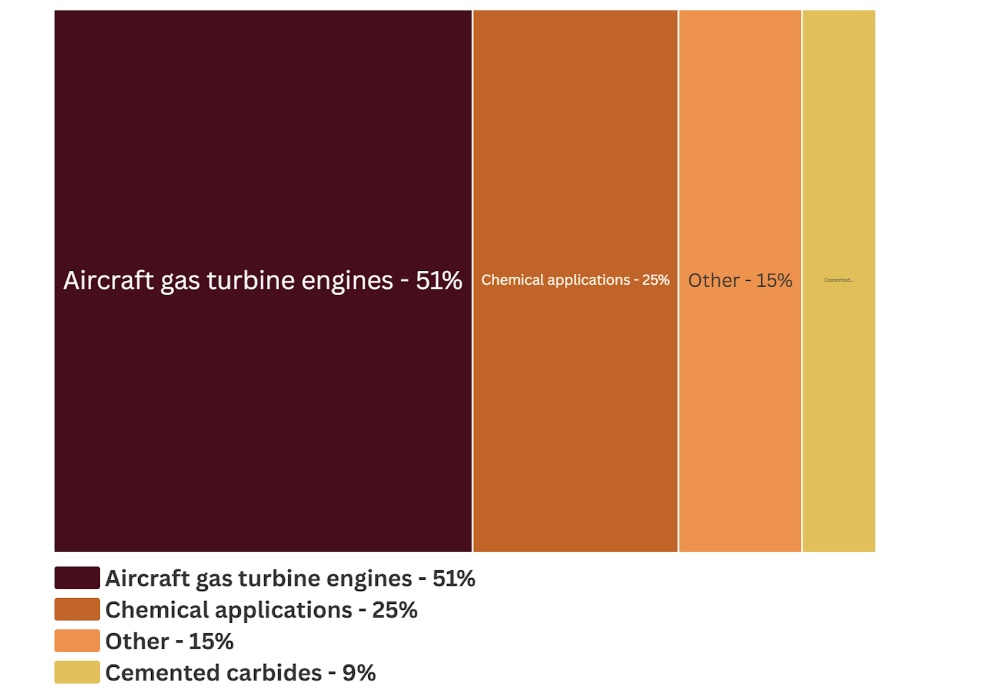
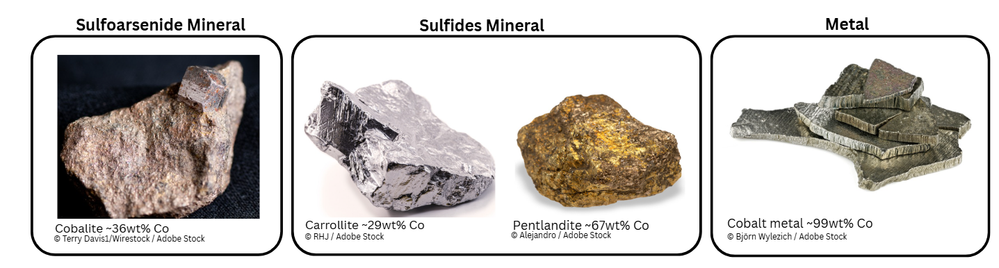

Cobalt containing minerals have been used for over a thousand years to make blue porcelain and glass throughout China, Persia, and Egypt. Miners have long detested cobalt ore, as it was often mistaken for copper due to its similar blue hue yet quickly discarded due to its propensity to release highly toxic arsenic fumes. Despite these hazards, cobalt metal was discovered in 1735 in Sweden after it was successfully smelted from one of these arsenic-rich blue ores. Today cobalt metal has been found to be a powerful ferromagnetic material that has become critical for making high temperature jet engines, batteries, and superalloys.
Cobalt mining began in the 1880s in Norway, Sweden and Hungary. Mining projects have since expanded to larger operation sites in the Democratic Republic of Congo (DRC) which supplies the world with almost ¾ of the global supply of cobalt.
As pure cobalt metal is somewhat reactive with oxygen, it naturally occurs embedded in several complex ores that are rich not only in arsenic, but also sulfur, nickel, copper, and/or zinc. The composition of these materials in the cobalt ore varies with the mineral occurrence's location. Copper-cobalt sediment deposits tend to occur in the DRC while nickel-cobalt laterites tend to occur in Indonesia. Metal concentrates exported from these areas tend to be imported by China, where many cobalt refineries are located. At these refinement facilities, cobalt is separated from the concentrate via two major processes, solvent extraction and electrowinning.
1. Solvent Extraction: Synthesizing Cobalt Electrolyte
During Solvent Extraction, the imported cobalt-containing concentrate is mixed with a phosphorus-containing organic acid that selectively binds cobalt ions, dissolving them into the organic part of the mixture. This organic phase is fed into another process called a stripping unit, where a strong acid like sulfuric acid 'strips' the cobalt ions from the organic phase into an aqueous solution. This solution is the electrolyte in the subsequent electrowinning step that's used to recover cobalt metal!
2. Electrowinning: Metal Recovery
During electrowinning, direct current is passed through the cobalt electrolyte. The dissolved cobalt ions reduce and precipitate as a solid onto a conductive substrate often made of stainless steel or titanium. The plated cobalt metal is mechanically removed from this substrate in the form of small circular discs, flakes, or other small pieces. These are vacuum sealed in stainless steel drums or other forms of inert packaging. The market price of cobalt metal supersedes the concentrates from which the cobalt was refined.
What is cobalt used for?

Figure 1: Industrial uses of cobalt. Data source: USGS National Minerals Information Center, 2025.
What do some cobalt minerals look like?

Figure 2: Different types of cobalt containing materials.
Where are cobalt mineral deposits?

Figure 3: Global cobalt reserves as reported by the USGS. Data is from https://mrdata.usgs.gov/general/map-global.html
Who imports cobalt?
Click on the blue bubbles to see where cobalt is imported from.
Where is cobalt mined?
Scroll with your mouse or touchpad over the tagged locations on the map to zoom in/out.